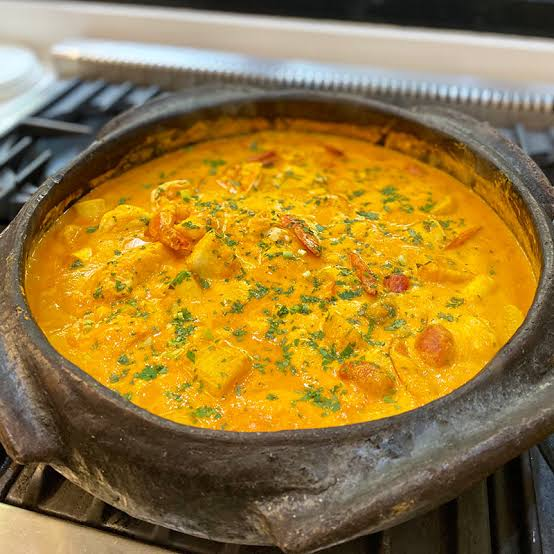
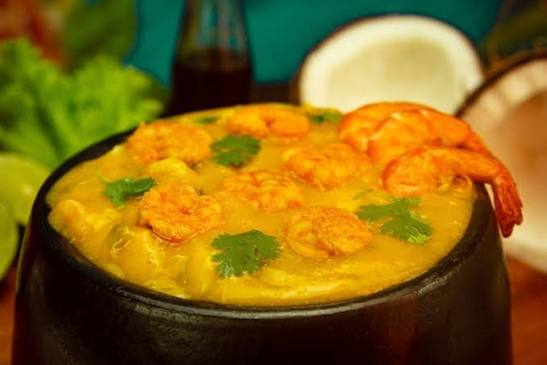
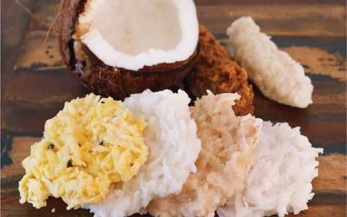

Entrada
Acarajé
R$ 14,00Bolinho de feijão-fradinho frito no azeite de dendê, recheado com vatapá, caruru, camarão seco e vinagrete.
Cozinha baiana
Sabores do dendê, do coco e do mar da Bahia
Receitas tradicionais, preparadas na hora com ingredientes frescos.
Entrada
Bolinho de feijão-fradinho frito no azeite de dendê, recheado com vatapá, caruru, camarão seco e vinagrete.

Prato principal
Peixe fresco cozido no leite de coco e dendê, com pimentões, tomate e coentro. Acompanha arroz e pirão.

Prato principal
Creme aveludado de aipim com camarões, leite de coco e azeite de dendê. Acompanha arroz branco.

Sobremesa
Coco fresco em calda dourada, cozida no tacho até ficar macia e cremosa.